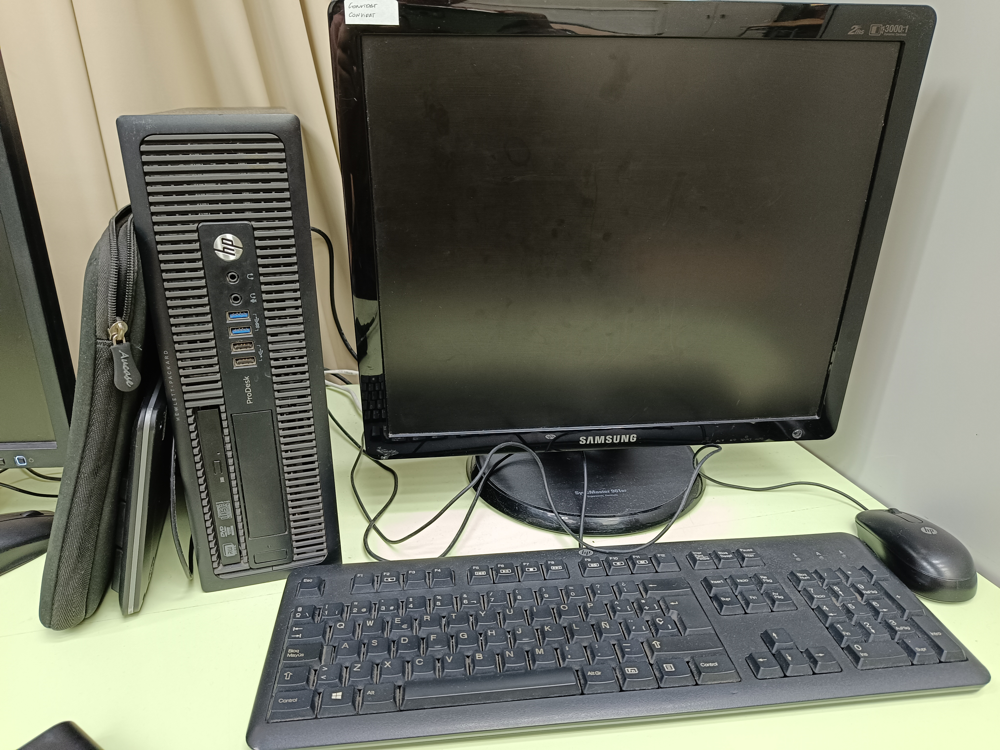
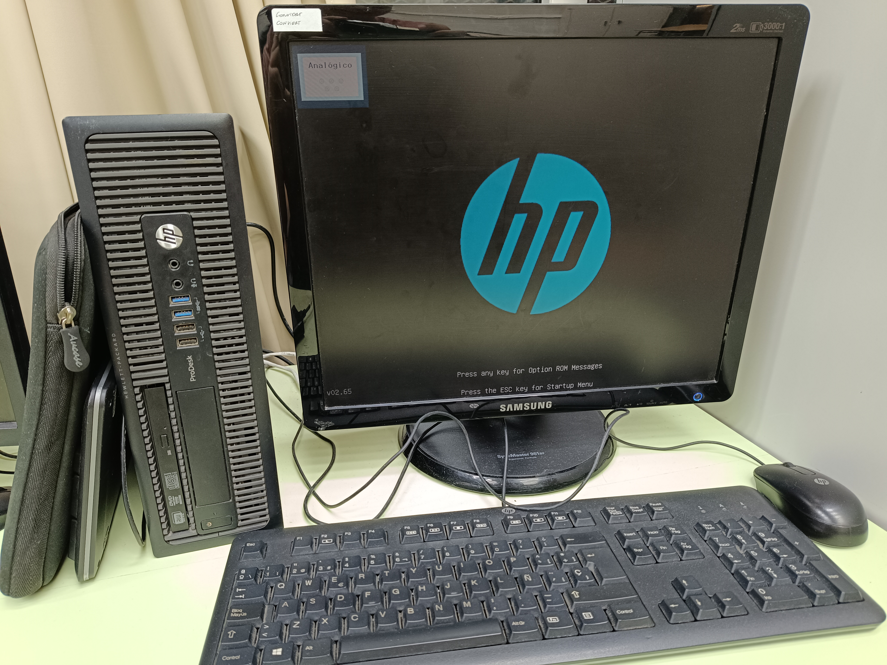
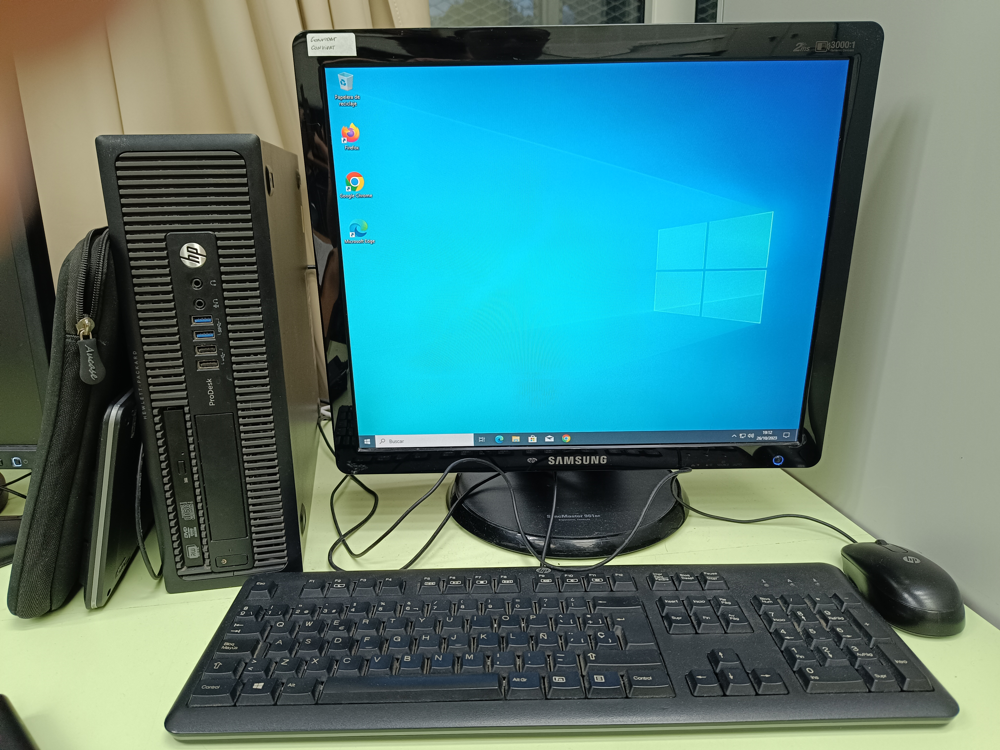

Comprovació
Per comprovar que un ordinador funciona, verifiqueu que l'alimentació estigui connectada i encenguda. Observeu si els ventiladors giren, l'indicador de LED s'il·lumina i escolteu qualsevol soroll anormal. La pantalla ha de mostrar el logotip inicial o un senyal de vida. Aquesta comprovació bàsica confirma si l'ordinador s'inicia correctament.
Procediment
Primer, vam connectar el cable d'alimentació i assegurar-nos que estigués ben connectat. Després, vam prémer el botó d'encés i vam observar si els ventiladors es van posar en marxa i la pantalla es va il·luminar, confirmant així el funcionament de l'ordinador.
Fotos



